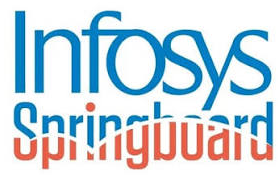

B.Tech. in Computer Science and Engineering
Sep 2023 — OngoingITER, Siksha ’O’ Anusandhan
CGPA: 8.61
COMPUTER SCIENCE & ENGINEERING
Final-year B.Tech student building thoughtful software and AI-powered tools.
I work across Java, Python, and full-stack web development, with project experience in generative AI, retrieval-augmented generation, and machine learning.
A LITTLE ABOUT ME
I’m a final-year Computer Science and Engineering undergraduate at ITER, Siksha ’O’ Anusandhan. My work spans full-stack applications, AI-assisted developer tools, and machine learning projects.
Alongside technical projects and an internship, I’ve developed teamwork and leadership through NCC participation, student coordination, and school activities.
ACADEMIC BACKGROUND
ITER, Siksha ’O’ Anusandhan
CGPA: 8.61
Kendriya Vidyalaya Charbatia
76.5%
Kendriya Vidyalaya Charbatia
93.8%
TOOLS & TECHNOLOGIES
SELECTED WORK
An AI-powered DSA coaching tool that gives personalized feedback, hints, and optimization tips on coding attempts. Evaluates logic and time and space complexity across 50+ problem patterns, with submission analysis in under 10 seconds.
A scalable backend simulator for account management, transfers, and real-time transaction logging. Includes input validation, balance checks, low-balance warnings, and optimized ledger queries.
A responsive web application with end-to-end error handling and educational modules. Evaluated five ML models and reports the best SVM accuracy as 77.34%.
PROFESSIONAL EXPERIENCE

Nov 2025 — Jan 2026Infosys Springboard · Banking Activity Simulation Platform
RECOGNITION & LEADERSHIP
CERTIFICATIONS
ACHIEVEMENTS
LEADERSHIP & ACTIVITIES
HAVE A PROJECT OR OPPORTUNITY?
I’m open to connecting about software development, AI projects, and early-career opportunities.
Email me